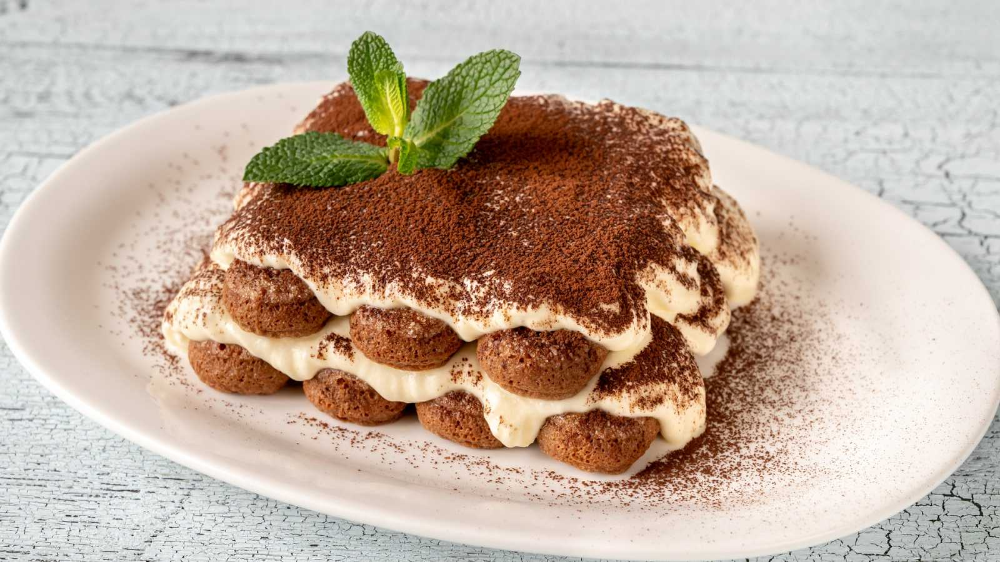
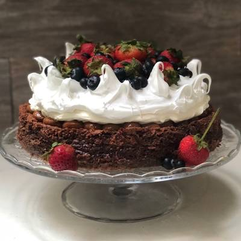
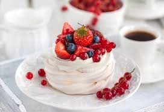
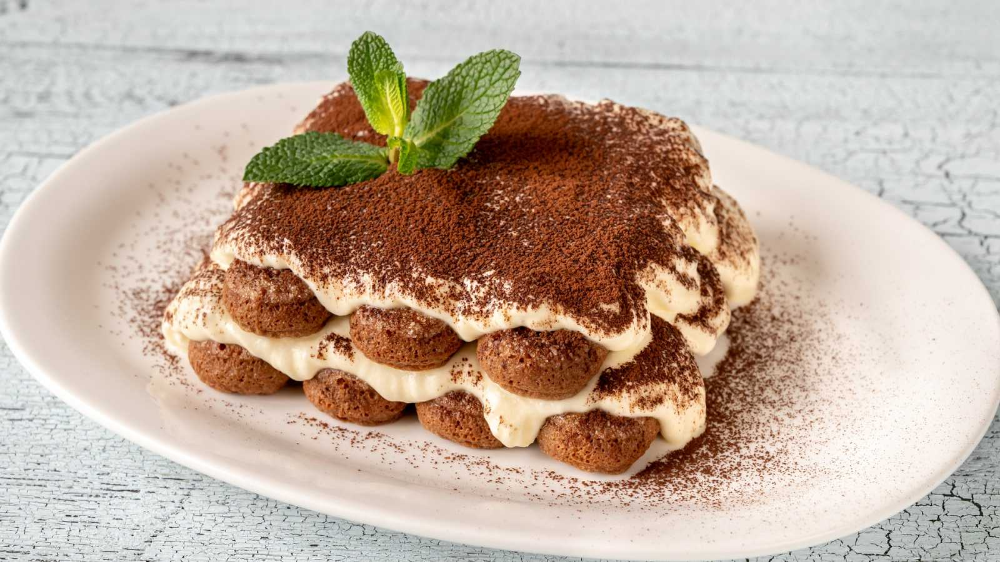
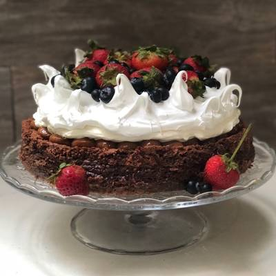
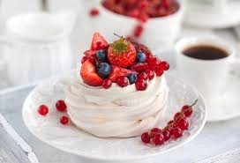

| 1 lt | Crema de leche |
| 3 | Merengues grandes |
| 200 gr | Azúcar |
| 200 gr | Castañas en almíbar |
| Dulce de leche | |
| Requesón | |
| 100 gr | Nueces |
| 30 gr | Cacao amargo |
| 3 discos | Piononos de 20 cm de diámetro |
| Extracto de vainilla | |
| Azúcar glas | |
| El primer paso de la receta de torta balcarce es batir a 3/4 la crema de leche con el azúcar. Mientras bates, añade un poco de extracto de vainilla para que la crema adquiera más sabor. Después, debes separar un tercio de la crema y vuelves a batir para obtener una crema chantilly. Una vez tienes lista la crema chantilly, reserva. Recupera el resto de la crema de leche del primer paso y añade las nueces picadas y el requesón. Además, agrega las castañas picadas eliminando previamente el exceso de almíbar. En este punto, rompe cada uno de los merengues en varios trozos y colócalos sobre la crema de leche junto a las nueces, el requesón y las castañas picadas. Trata de mezclar todo envolviendo la crema. Es muy importante que mezcles bien los ingredientes con paciencia y dedicación. Así, evitarás que la crema se corte. Con las cremas preparadas, puedes empezar a armar el postre tipo balcarce, también conocido como postre chajá. Primero, unta los discos de piononos con el dulce de leche. Cuanto más generoso seas, mayor sabor tendrá la torta balcarce de dulce de leche. Sobre cada disco, espolvorea el cacao amargo y coloca otro disco que sirva como base en un molde de 20 cm de diámetro con aro. Añade una capa generosa de la crema elaborada anteriormente sobre los discos de piononos. Posteriormente, coloca otro disco que contenga el dulce de leche hacia abajo y, por último, otra capa de crema. Después, coloca el tercer y último disco de pionono, nuevamente con el dulce de leche hacia abajo, y aprieta ligeramente para ajustarlo. Guarda la torta balcarce en la heladera durante 4 horas. Transcurrido este tiempo, la desmoldas para cubrirla con la crema chantilly que habías dejado reservada. Para terminar el postre chajá, espolvorea un poco de coco rallado por encima. Añade también azúcar glas por toda la superficie y los costados para que la torta balcarce quede bien decorada. Corta la torta balcarce argentina en diferentes porciones. Sirve a tus comensales y ¡a disfrutar! |
| Base del postre | |
|---|---|
| 225 gr | Gallatitas de vainilla tipo mana |
| 100 gr | Manteca | Ingredientes: Relleno del postre |
| 600 gr | Queso crema tipo Philadelphia |
| 125 gr | Azúcar |
| 50 ml | Crema de leche |
| 1 cda | Postres de maicena |
| 3 | Huevos | Ingredientes: Decoración del postre |
| 200 gr | Mermelada de frutos rojos |
| 200 gr | Frutos rojos variados frescos |
| Prepara la base de la tarta de frutos rojos. Para ello, tritura las galletas con una procesadora o metiendo las galletas en una bolsa de plástico y para luego pasar un rodillo por encima hasta hacerlas migas. Truco: Elige las galletas que más te gusten, pueden ser de canela, jengibre, avena, tipo oreo o la que tengas por casa. Funde la manteca en el microondas y mezcla con las migas de galletas hasta conseguir una pasta. Enmanteca un molde desmontable redondo de unos 22-24 cm y pon la base de galletas en el fondo. Aprieta con las manos las galletas para que queden bien adheridas a la base. Reserva en la heladera. Precalienta el horno a 150 ºC. En un bol amplio, coloca el queso fresco, la crema, la maicena, los huevos y el azúcar; mezcla bien. Puedes utilizar las varillas de una batidora eléctrica, pero bate solo hasta que estén integrados los ingredientes. Saca el molde de la heladera y vierte con cuidado la mezcla de queso. Hornea a 150 ºC con calor arriba y abajo durante 45 minutos. Pasado el tiempo, apaga el horno y deja que la tarta se enfríe en su interior o, por lo menos, déjala dentro del horno apagado otros 45 minutos. Saca la cheesecake de frutos del bosque y guárdala en la heladera por al menos 4 horas para que enfríe. A la hora de servir, decora con la mermelada de frutos rojos por encima y con los frutos rojos frescos. Si te queda cheesecake de frutos rojos, resérvala en la heladera hasta cuatro días como máximo. ¡Disfruta! |
| 200 ml | Café |
| 5 | Huevos | 500 gr | Queso mascarpone |
| 300 gr | Galletitas de vainilla |
| 150 gr | Azúcar |
| 4 cdas | Licor de almendra |
| Separar la yema de la clara de los huevos. Poner las claras a punto de nieve. Juntar la yema de huevo con el licor de almendras, el azúcar y el mascarpone y batirlo todo. Una vez batido lo juntamos con la clara a punto de nieve para lograr una crema. Mientras humedecemos el bizcocho con el café (bastará con mojarlo 1 segundo para que no se deshaga). Para montar el tiramisú se va sobreponiendo el bizcocho y la crema. Comenzando por una base de bizcocho, otra de crema y así sucesivamente. Culminar con un chorro de café o espolvoreando cacao para los más golosos |
| Base de la torta | |
|---|---|
| 400 gr | Manteca |
| 300 gr | Chocolate |
| 400 gr | Azúcar |
| 8 | Huevos |
| 4 cdas | Harina "0000" | Crema chantilly |
| 300 gr | Crema de leche |
| c/n | Azúcar glass | Merengue italiano |
| 165 gr | Azúcar |
| 70 cc | Agua |
| 3 | Claras | Decoración |
| 500 gr | Dulce de leche repostero |
| 400 gr | Frutos rojos |
| Derretir a baño maría o en el microondas en intervalos cortos el chocolate con la manteca en cubos y el azúcar. Dejar enfriar unos minutos y agregar uno a uno los huevos. Por último agregar la harina cernida/ tamizada. Hornear en un molde forrado con papel aluminio y enmantecado y enharinado. Para darnos cuenta que está listo al insertar un palillo este saldrá con algunos miguitas y la preparación se despegará de los bordes del molde. Nos daremos cuenta que no quedará del todo firme al salir del horno pero lo dejamos enfriar y lo desmoldamos pasadas algunas hs. Ahí lo decoramos con el dulce de leche, la crema batida, el merengue italiano y los frutos rojos. Acá les dejo el paso a paso del merengue 👇🏼 En una cacerolita colocamos 165 g de azúcar y agua para cubrir el azúcar. Si tenemos un termómetro 🌡 somos Gardel. Cuando el almíbar llegue a 113-115 grados ponemos a batir las claras con los 55 g de azúcar. Cuando llegue a 118 g lo sacamos del fuego 🔥. Ahora si no tenemos termómetro, cuando aparezcan las primeras burbujas batimos las claras con el azúcar. Y cuando el almíbar llegue al punto bola blanda, ahí podemos usarlo. Cómo nos damos cuenta? Hay dos opciones, una tirar un poco del almíbar en agua fría y luego al tomarlo con los dedos podremos hacer una bolita que se puede modelar con los dedos. La opción dos que a mi es la que más me funciona (y es más divertida) es usando una espumadera que tenga agujerito en la punta, lo introducimos en el almíbar, soplamos y se formará una burbuja. Llegado este punto vamos vertiendo en forma de hilo 🧶 en las claras que montamos sin dejar de batir, hasta que se enfríe. Usar inmediatamente para decorar. |
| 100 gr | Claras de huevo |
| 200 gr | Azúcar glass |
| 20 gr | Fécula de maiz |
| 1 cdta | Jugo de limón |
| Comienza por batir las claras de huevo a punto de nieve, preferiblemente que estén a temperatura ambiente para que su tamaño se doble más fácil. Ahora debes cernir el azúcar glass junto a la fécula de maíz. Vuelve a batir hasta que todo esté integrado y por último agrega el jugo de limón. Bate por unos 10-15 minutos o hasta que tengas una consistencia firme, de esta manera podrás formar las pavlovas. Si no tienes manga puedes hacer la forma con una cuchara. Hornea por 40 minutos a 250 °F Luego, deja que se enfríen dentro del horno para que no se quiebren, ya que son muy delicadas. Yo las rellené con crema pastelera y las decoré con frutos rojos. |